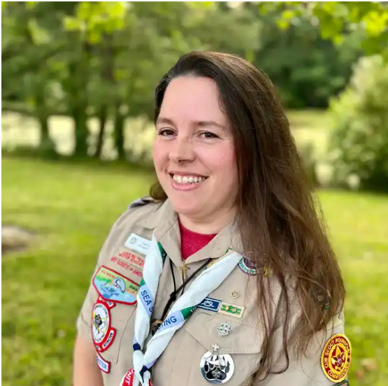

Troop 234 News & Events
New Required Training: Safeguarding Youth
May 2025Announced at the Scouting America National Annual Meeting in Orlando, the new Safeguarding Youth Training is now live and mandatory for all registered adult volunteers. It is also a joining requirement for new adult members.
- Duration: ~90 minutes
- Languages: Available in English and Spanish
- Access: my.scouting.org
- Requirement: Complete all lessons + score 80% or higher on the final test
Annual Refresher: After completing the full course once, a 15-minute refresher and retest is required annually to stay current.
Transition from Previous YPT:
- If you’ve already completed Youth Protection Training (YPT), your certification remains valid.
- If you're currently taking YPT, you have less than one week to finish it. After that, it will be replaced by the new training.
Why This Matters: This updated training reinforces a culture of active supervision, situational awareness, and safety—ensuring we’re all equipped to help keep our Scouts safe.
👉 Visit my.scouting.org to get started
To learn more, watch the interview with Chief Safeguarding Officer Glen Pounder: Watch on YouTube
Kate Sklat Receives Scouting’s Highest Local Honor
May 2025 We are thrilled to share that Troop 234’s own Kate Sklat has been awarded the 2024 Silver Beaver Award, the highest honor presented by the Tidewater Council. The award recognizes distinguished service to youth and is among the most prestigious in Scouting America.
Kate has served in leadership roles across multiple units, from Packs and Troops to Crews and Ships, and currently serves as Course Director for the 2025 Wood Badge. She is also a Commissioner at the district and council levels, and was recently honored with the Order of the Arrow’s Vigil Honor.
Kate’s long-standing dedication includes supporting her children’s Scouting journeys, staffing NYLT and Jamboree events, and contributing nationally as part of the Commissioner Service Team. We are incredibly proud to have such a trusted leader in our Troop family.
Wood Badge Leadership Training – CST15-596-25
May 02–04 & May 31–June 1, 2025Katie Anderson, Barry Anderson, and Adam Levine attended the first weekend of Wood Badge and will return for the second half on May 31. After completing the course, they will begin working on their ticket items to serve Scouting and their communities.
This year’s course is proudly led by Troop 234’s very own Kate Sklat as Course Director. Assistant Scoutmaster Charlie Tate is also serving on Wood Badge staff. We are proud to see our troop so strongly represented at this premier adult leadership training!
Three Rivers Roundtable
June 12, 2025 • 7:00 PM – 8:00 PMAll Scout leaders and volunteers are invited to attend the monthly Roundtable for training, district updates, and idea sharing. This will be held at the Deep Creek Baptist Church, located at 250 Mill Creek Pkwy, Chesapeake, VA 23323.
Summer Camp at Woodruff Scout Camp
June 28 – July 5, 2025Troop 234 is headed to Woodruff Scout Camp in Blairsville, Georgia! Scouts will enjoy a full week of merit badges, high adventure activities, and troop bonding in the North Georgia mountains.
To download your Camp Woodruff Swim Qualification form, click the link below:
Download Woodruff Swim Test Procedures & Forms
To learn more about Woodruff Scout Camp, visit: www.campwoodruff.org/summer-camp